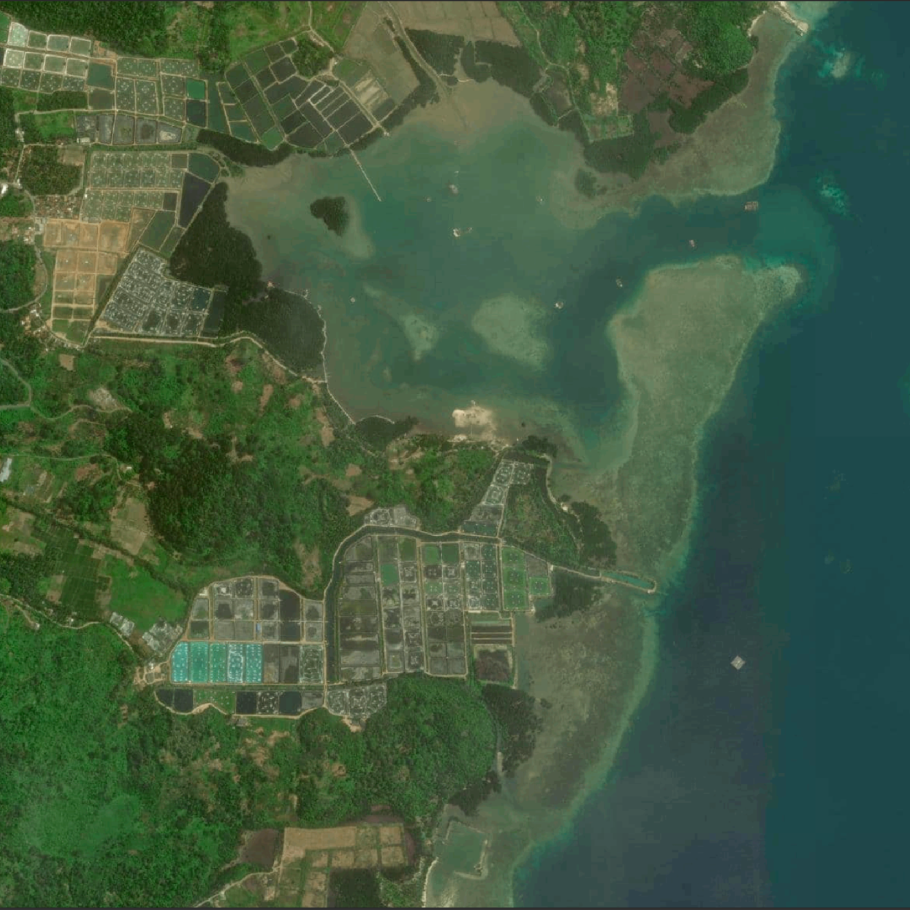

Base Map
Peta dasar yang menampilkan kondisi lahan atau tanah yang diperoleh langsung dari citra satelit atau udara.
Mangrove Petengoran adalah ekowisata seluas 113 hektar di Desa Gebang, Pesawaran, Lampung, yang berfungsi menjaga stabilitas pantai dan menyerap karbon. Dikelola oleh masyarakat, pemerintah, dan mitra swasta seperti PT Japfa Comfeed Indonesia TBK dan PT PLN, area ini menggabungkan konservasi dan peningkatan ekonomi lokal. Pengunjung menikmati fasilitas dan berkontribusi melalui donasi untuk pemeliharaan dan pengembangan mangrove.
Map